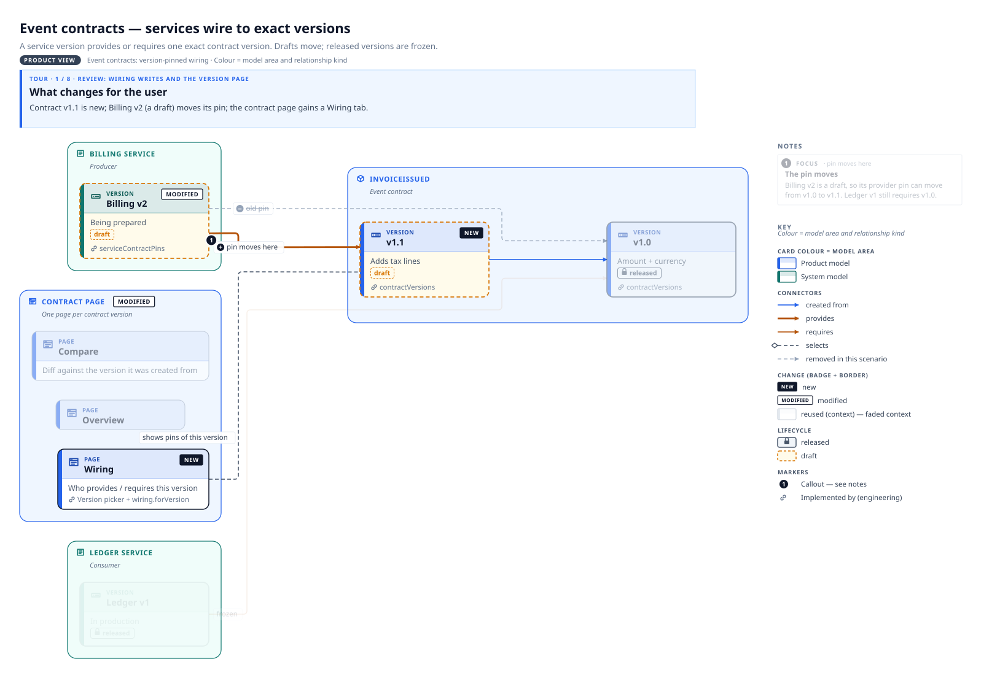
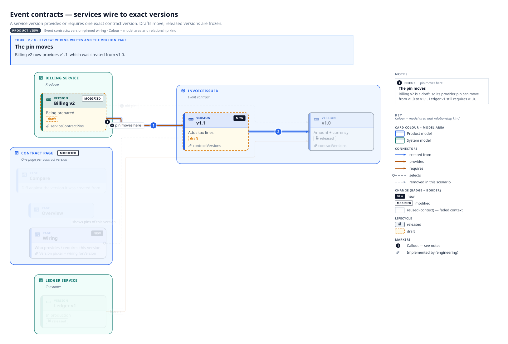
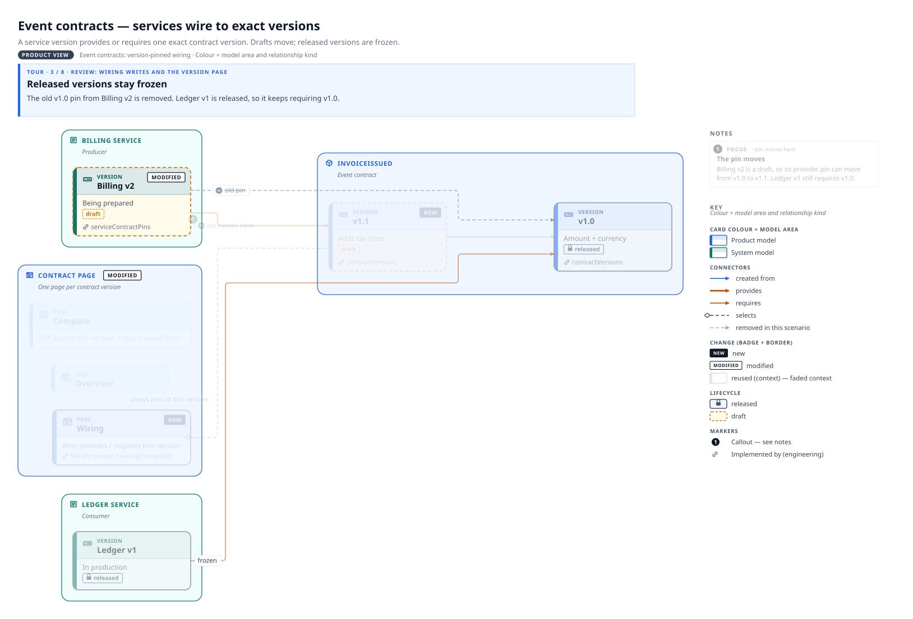
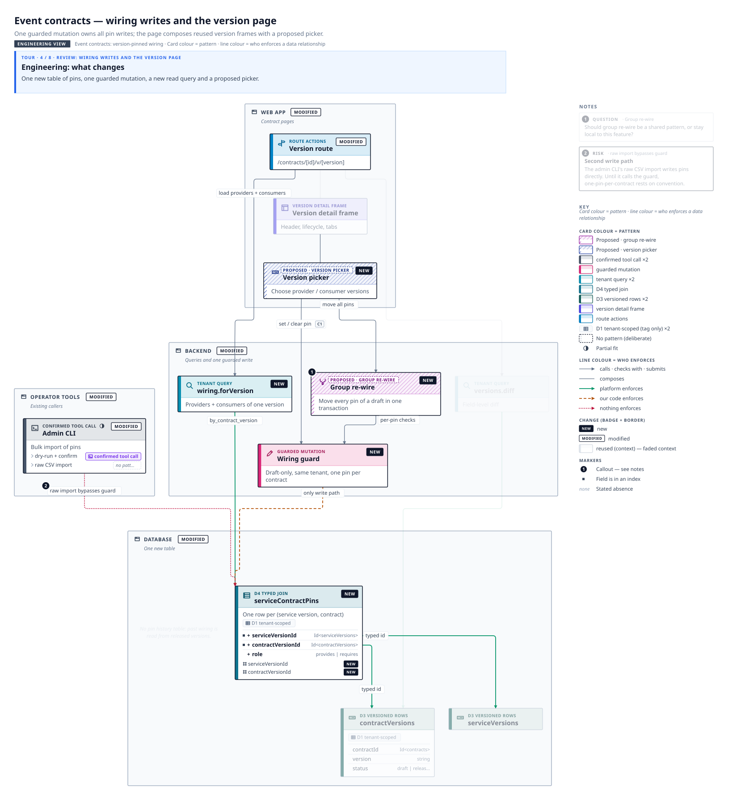
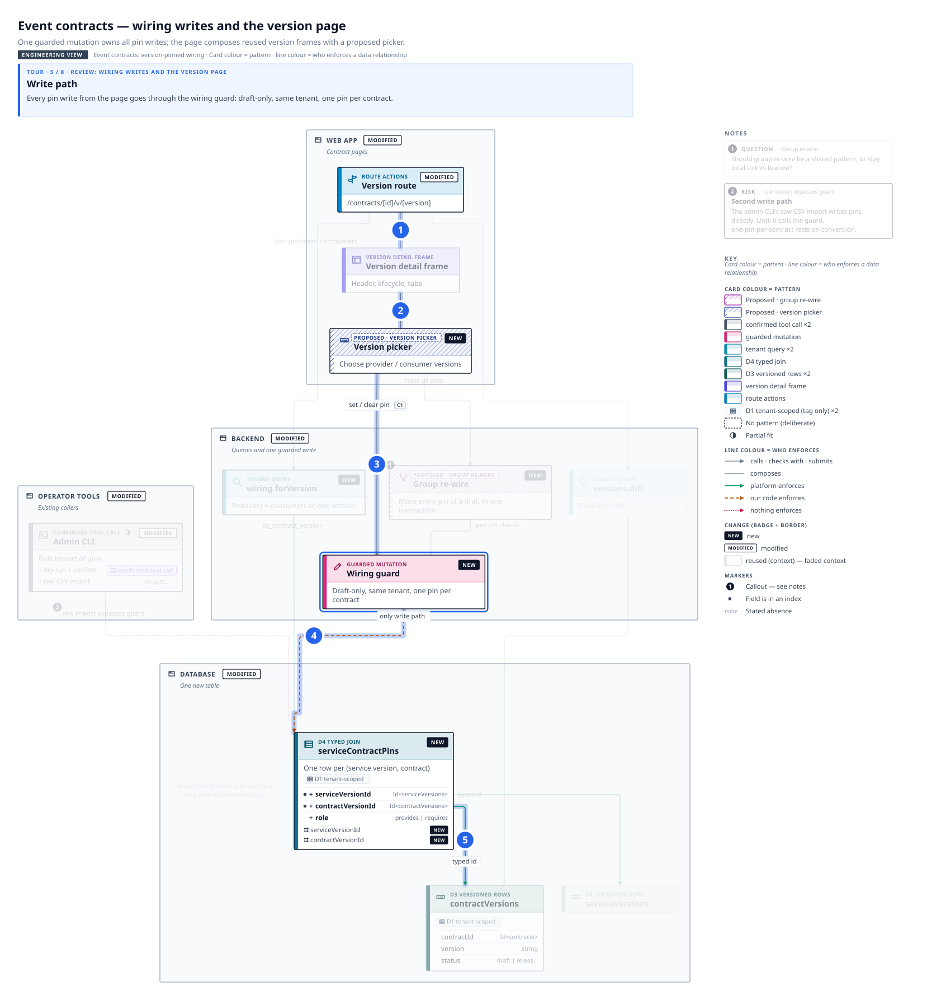
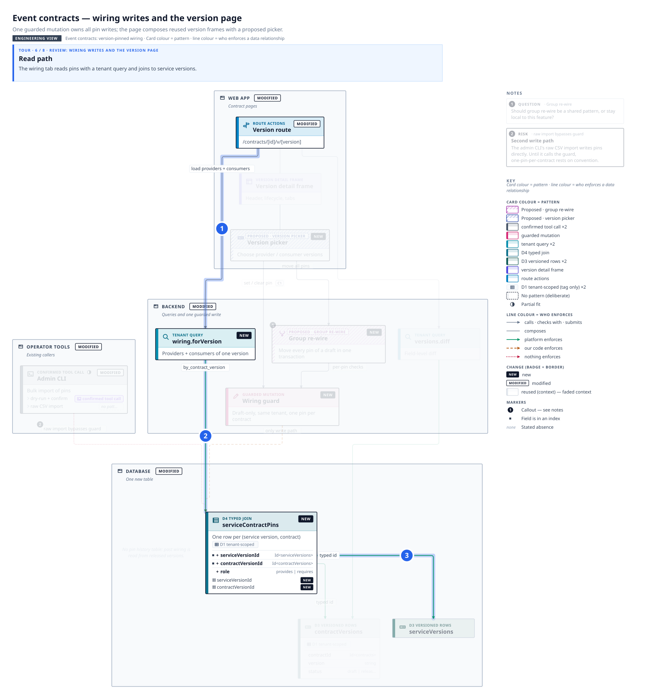
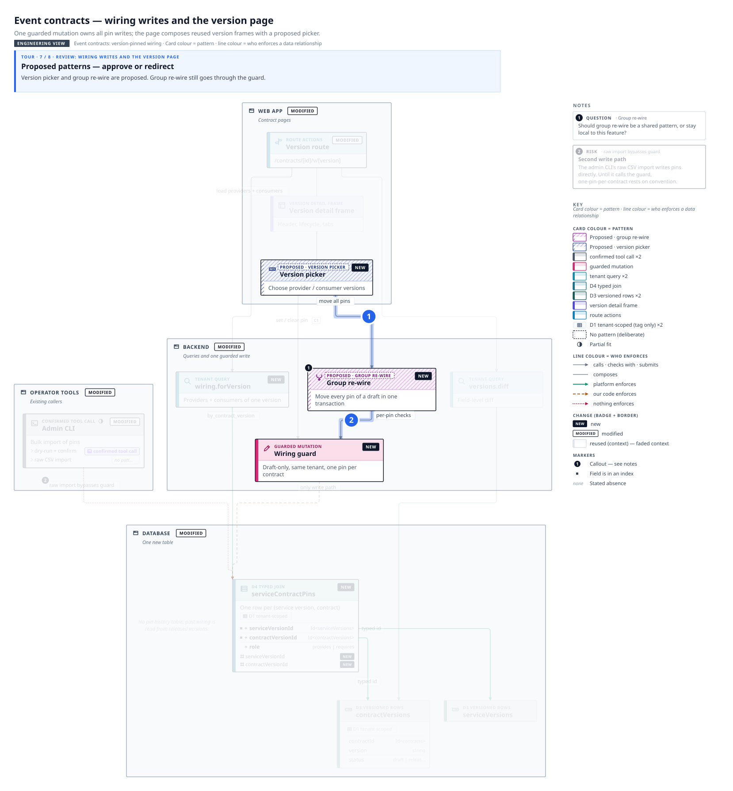
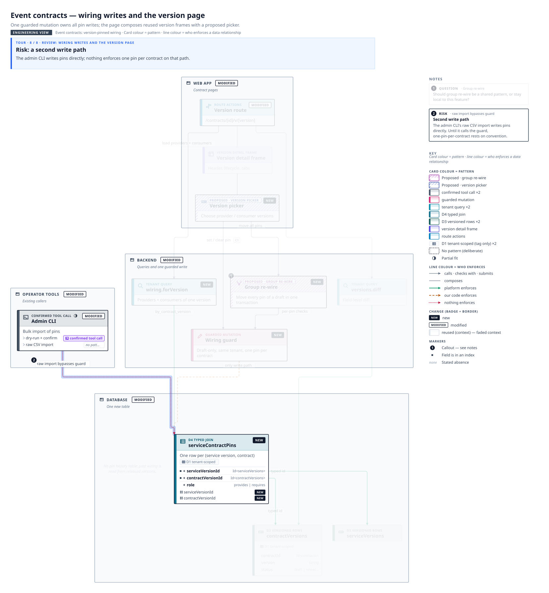

What changes for the user
Contract v1.1 is new; Billing v2 (a draft) moves its pin; the contract page gains a Wiring tab.

The pin moves
Billing v2 now provides v1.1, which was created from v1.0.

Released versions stay frozen
The old v1.0 pin from Billing v2 is removed. Ledger v1 is released, so it keeps requiring v1.0.

Engineering: what changes
One new table of pins, one guarded mutation, a new read query and a proposed picker.

Write path
Every pin write from the page goes through the wiring guard: draft-only, same tenant, one pin per contract.

Read path
The wiring tab reads pins with a tenant query and joins to service versions.

Proposed patterns — approve or redirect
Version picker and group re-wire are proposed. Group re-wire still goes through the guard.

Risk: a second write path
The admin CLI writes pins directly; nothing enforces one pin per contract on that path.
